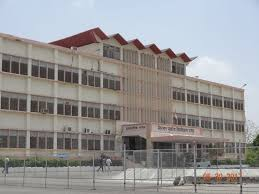

Ravindra Nath Tagore P.G.College
Near MataJi Temple, Highway Road, Th. Kapasan
Distt. Chittorgarh (Raj )
About Our Univercity
MOHAN LAL SUKHADIA UNIVERSITY UDAIPUR
NAAC Accrediatd 'A' Grade
Mohan Lal Sukhadia University at Udaipur (Rajasthan) is a UGC recognized multi faculty,affiliating
State University (Autonomous State University of Govt. of Rajasthan) establishedby an act in the year
1962 to cater the needs of higher education.Mohan lal Sukhadia University has been declared eligible
for central assistance under section 12B of UGC Act,1956 & is member of Association of Indian Universities (AIU).
The university has 33 departments under four constituent colleges and has more then 196 affiliated
colleges from districts of Udaipur,Chittorgarh,Banswara,Dungerpur,Pratapgarh,Rajsamand,Sirohi etc
with an enrollment of more then 1.65 lac students. The National Assessment and Accreditation Council (NAAC),an autonomous institution of the University Grants Commission,has accredited the Mohan lal Sukhadia University,Udaipur Rajasthan with 'A' Grade (institutional score between 90-95%),Mohan lal
Sukhadia University is first & only University of Rajasthan & 19th University in India having above
NAAC accreditation.
Contact : Mohan lal Sukhadia University Udaipur 313001,Rajasthan
Tel : +91-294-2471035
Website :www.mlsu.ac.in